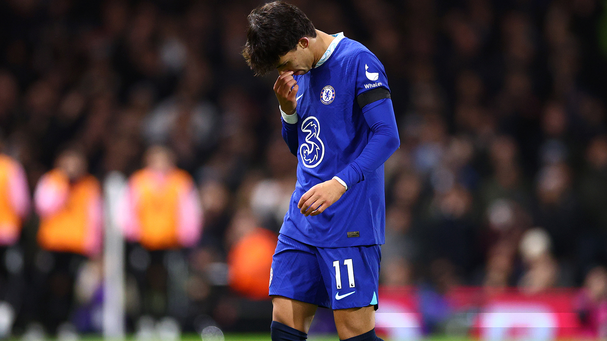

goodbye
january 14th, 2023 · tldr

“Did you see that Joao got sent off for Chelsea?” asked my friend, a fellow football fanatic.
I stared at him blankly, confused on more than one level. I opened up a new Google tab. Sure enough, Joao Felix got red carded earlier that day on his Chelsea loan spell debut.
Headspace
Realizing Felix plays for Chelsea was weird; it felt surprising, disorienting, and like I’m falling behind in the footballing world. Like a mild case of FOMO. But after keeping up relentlessly with all things football, I found it hard to care too much about the Portuguese wonderkid’s latest chapter.
Staying updated on football was fun, don’t get me wrong. Coveted league champions being named in dramatic fashion, player drama and the news outlets’ subsequent mania, and historic records being shattered by living icons were undoubtedly entertaining.
But after tirelessly consuming all those posts, headlines, and commentaries from news outlets and pundits, I must make an analogy. The way those media sources gush over every last transfer rumor and press conference is a lot like the drama-obsessed friend that enjoys gossiping about random people. Does everyone have a friend like that, or is it just me?
In either case, I’ve realized that, like gossip, football drama has largely been a pointless waste of headspace that has nothing to do with me or people that I care about. It weighs my brain down by causing random thoughts to swirl around my head during other tasks.
Feeling Pawnish
Furthermore, I’ve realized that the football industry is set up to be an endless cycle of entertainment for news outlets and media to thrive off of. Becoming fully aware of this made me snap out of my decade-long hypnosis because that’s what this all really is: a cycle. I’m ready to stop obsessing over who overtook who in the Premier League standings, witness my dozenth UCL knockout draw, and the transfer sagas that seem to get more and more random and outrageous.
I am not denouncing watching football. Football is beautiful, both technically and tactically, and I hope to continue watching it for that beauty.
I am also not denouncing following football. Keeping up with tournaments and big games and transfers is entertainment, no different than watching a TV series.
I am, however, denouncing the media. They take advantage of the sport for engagement, leveraging fans’ passion and fervor to grow their own business, all while diluting the sport with their endless craze. They pit fans and players against each other, stirring up controversy where there shouldn’t be any. Their headlines repeat themselves every year, and I frankly feel stupid and belittled knowing that I played into the hands of this elaborate entertainment scheme for so long. I was a pawn.
So, to Marca, L'Équipe, and The Sun, to ESPN, BleacherReport, and 433, to Micah Richards, Jamie Carragher, and Thiery Henry: consider this a goodbye. Perhaps not a permanent one, but a goodbye nonetheless.
tl;dr: Realizing that footballing media spews repetitive, pointless headlines for engagement made realize that I'm playing into their hands and that they're adding nothing to my life. While watching football is entertaining, I will be bidding farewell to the constant stream of media that I've been consuming.